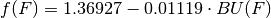

ReactorMG Class¶
Reactors are the most computationally complex of the nuclear fuel cycle components currently implemented. Bright handles nuclear reactors in two distinct object classes: a one neutron energy group methodology and a multi-group algorithm (implemented here).
All multi-group (MG) reactors share a common methodological backbone. This page describes what is fundamentally the same about such reactor objects via the ReactorMG class. This is a subclass of FCComp.
The multi-group reactors are based on a algorithm submitted for published by the author to Nuclear Engineering & Design and otherwise found in Chapter 5 of the author’s dissertation.
ReactorMG Helper & Child Classes
All functionality may be found in the reactormg module:
import bright.reactormg
- class bright.reactormg.ReactorMG¶
Multi-Group Reactor Fuel Cycle Component Class. Daughter of FCComp class.
Parameters : reactor_parameters : ReactorParameters or None, optional
A special data structure that contains information on how to setup and run the reactor.
track_params : set of str or None, optional
A set of strings that represents what parameter data the reactor should store and set. Different reactor types may have different characteristic parameters that are of interest.
name : str, optional
The name of the reactor fuel cycle component instance.
- B¶
This integer is the total number of batches in the fuel management scheme. B is typically indexed by b.
- flux¶
The nominal flux value (float) that the library for this reactor type was generated with. Used to correctly weight batch-specific fluxes.
- chemical_form_fuel¶
This is the chemical form of fuel as a dictionary or other mapping. Keys are often strings that represent isotopes while values represent the corresponding mass weights. The heavy metal concentration by the key “IHM”. This will automatically fill in the nuclides in mat_feed for the “IHM” weight. For example, LWRs typically use a UOX fuel form:
ReactorMG.chemical_form_fuel = {"IHM": 1.0, "O16": 2.0}
- chemical_form_clad¶
This is the chemical form of cladding as a dictionary or other mapping. This uses the same notation as fuel_form except that “IHM” is no longer a valid key. Cladding is often made from some zircalloy.
- chemical_form_cool¶
This is the chemical form of coolant as a dictionary or other mapping. This uses the same notation as fuel_form except that “IHM” is no longer a valid key. The term ‘coolant’ is used in preference over the term ‘moderator’ because not all reactors moderate neutrons.
- rho_fuel¶
The fuel region density. A float in units of [g/cm^3].
- rho_clad¶
The cladding region density. A float in units of [g/cm^3].
- rho_cool¶
The coolant region density. A float in units of [g/cm^3].
- P_NL¶
The reactor’s non-leakage probability (float). This is often used as a calibration parameter.
- target_BU¶
The reactor’s target discharge burnup (float). This is given in units of [MWd/kgIHM]. Often the actual discharge burnup BUd does not quite hit this value, but comes acceptably close.
- specific_power¶
The specific power of the fuel (float) in units of [MW/kgIHM]
- burn_regions¶
Number of annular burn regions (int).
- S¶
Number of burnup time steps.
- burn_time¶
Curent burnup time [d].
- bt_s¶
Curent burnup time index. burn_time == burn_times[bt_s]
- burn_times¶
A non-negative, monotonically increasing numpy float array (C++ vector<double>) of burnup times [days].
- use_zeta¶
Boolaean to determine whether the thermal disadvantage factor is employed or not. LWRs typically set this as True while FRs have a False value.
- lattice_flag¶
Flag (str) that represents what lattice type the fuel assemblies are arranged in. Currently accepted values are “Planar”, “Spherical”, and “Cylindrical”.
- rescale_hydrogen_xs¶
Boolean to determine whether the reactor should rescale the Hydrogen-1 destruction rate in the coolant as a function of fluence. The scaling factor is calculated via the following equation

This is typically not done for fast reactors but is a useful correction for LWRs.
- burnup_via_constant¶
Flag (str) for constant “flux” or “power” calculations.
- branch_ratio_cutoff¶
The cutoff value (float) below which the bateman equations are not solved.
- r_fuel¶
The radius (float) of the fuel region [cm].
- r_void¶
The radius (float) of the void region [cm].
- r_clad¶
The radius (float) of the cladding region [cm].
- pitch¶
The pitch or length (float) of the unit fuel pin cell [cm].
- S_O¶
The number of slots (float) in a fuel assembly that are open. Thus this is the number of slots that do not contain a fuel pin and are instead filled in by coolant.
- S_T¶
The total number of fuel pin slots (float) in a fuel assembly. For a 17x17 bundle this is 289.0.
- V_fuel¶
The relative fuel region volume.
- V_clad¶
The relative cladding region volume.
- V_cool¶
The relative coolant region volume.
- libfile¶
The path (str) to the reactor data library; usually something like “lwr_mg.h5”.
- I¶
Set of nuclides that may be in mat_feed. Indexed by i.
- J¶
Set of nuclides that may be in mat_prod. Indexed by j.
- K¶
Set of nuclides that is the union of all nucs in mat_feed and all nucs in nuc_data. Indexed by k.
- K_num¶
Size of K set.
- K_ord¶
Lowest-to-highest order of K.
- K_ind¶
Lowest-to-highest map of J into matrix position.
- nperturbations¶
Number of rows in the pertubtaion table. Indexed by p.
- perturbed_fields¶
Mapping of the form {field_name: [min, max, delta]}.
- G¶
Number of energy bins. Indexed by g for incident neutrons and h for exiting neutrons.
- E_g¶
Energy bin boundaries [MeV]. Vector of doubles.
- phi_g¶
Group fluxes [n/s/cm^2] (ie flux per energy group).
- phi¶
Total flux [n/s/cm^2].
- Phi¶
Fluence [n/kb].
- time0¶
Time steps used in data library [d].
- BU0¶
Burnup vector used in data library [MWd/kgIHM].
- Ti0¶
Data library’s transmutation vector [kg_i].
- sigma_t_pg¶
Total cross section from data library [barns].
- sigma_a_pg¶
Absorption cross section from data library [barns].
- nubar_sigma_f_pg¶
Neutrons per fission times fission cross section from data library [n barns].
- chi_pg¶
Fission energy spectrum from data library [MeV].
- sigma_s_pgh¶
Group to group scattering cross section from data library [barns].
- sigma_f_pg¶
Fission cross section from data library [barns].
- sigma_gamma_pg¶
Capture cross section from data library [barns].
- sigma_2n_pg¶
(n, 2n) cross section from data library [barns].
- sigma_3n_pg¶
(n, 3n) cross section from data library [barns].
- sigma_alpha_pg¶
(n, alpha) cross section from data library [barns].
- sigma_proton_pg¶
(n, proton) cross section from data library [barns].
- sigma_gamma_x_pg¶
Capture cross section (excited) from data library [barns].
- sigma_2n_x_pg¶
(n, 2n*) cross section from data library [barns].
- A_HM_t¶
Atomic weight of heavy metal.
- MW_fuel_t¶
Fuel Molecular Weight [amu].
- MW_clad_t¶
Cladding Molecular Weight [amu].
- MW_cool_t¶
Coolant Molecular Weight [amu].
- n_fuel_it¶
Fuel Atom Number Weight.
- n_clad_it¶
Cladding Atom Number Weight.
- n_cool_it¶
Coolant Atom Number Weight.
- m_fuel_it¶
Fuel Mass Weight.
- m_clad_it¶
Cladding Mass Weight.
- m_cool_it¶
Coolant Mass Weight.
- N_fuel_it¶
Fuel Number Density [atoms/cm^3].
- N_clad_it¶
Cladding Number Density [atoms/cm^3].
- N_cool_it¶
Coolant Number Density [atoms/cm^3].
- phi_tg¶
Group fluxes as a function of time [n/s/cm^2].
- phi_t¶
Total flux as a function of time [n/s/cm^2].
- Phi_t¶
Fluence as a function of time [n/kb].
- BU_t¶
Burnup as a function of time [MWd/kgIHM].
- zeta_tg¶
Disadvantage factors per group as a function of time.
- T_it¶
Transformation Matrix [kg_i/kgIHM].
- sigma_t_itg¶
Total cross section as a function of nuclide and burn_time [barns].
- sigma_a_itg¶
Absorption cross section as a function of nuclide and burn_time [barns].
- nubar_sigma_f_itg¶
Neutrons per fission times Fission cross section as a function of nuclide and burn_time [n barns].
- chi_itg¶
Fission neutron energy spectrum as a function of nuclide and burn_time [MeV].
- sigma_s_itgh¶
Group to group scattering cross section as a function of nuclide and burn_time [barns].
- sigma_f_itg¶
Fission cross section as a function of nuclide and burn_time [barns].
- sigma_gamma_itg¶
Capture cross section as a function of nuclide and burn_time [barns]
- sigma_2n_itg¶
(n, 2n) cross section as a function of nuclide and burn_time [barns].
- sigma_3n_itg¶
(n, 3n) cross section as a function of nuclide and burn_time [barns].
- sigma_alpha_itg¶
(n, alpha) cross section as a function of nuclide and burn_time [barns].
- sigma_proton_itg¶
(n, proton) cross section as a function of nuclide and burn_time [barns].
- sigma_gamma_x_itg¶
Capture cross section (excited) as a function of nuclide and burn_time [barns].
- sigma_2n_x_itg¶
(n, 2n*) cross section as a function of nuclide and burn_time [barns].
- Sigma_t_fuel_tg¶
Fuel-averaged macroscopic total cross-section as a function of time and energy group [1/cm].
- Sigma_a_fuel_tg¶
Fuel-averaged macroscopic absorption cross section as a function of time and energy group [1/cm]
- nubar_Sigma_f_fuel_tg¶
Fuel-averaged nubar times the macroscopic fission cross-section as a function of time and energy group [n/cm].
- chi_fuel_tg¶
Fuel-averaged fission neutron energy spectrum as a function of time and energy group [MeV].
- Sigma_s_fuel_tgh¶
Fuel-averaged macroscopic scattering kernel cross-section as a function of time [1/cm].
- Sigma_f_fuel_tg¶
Fuel-averaged macroscopic fission cross-section as a function of time and energy group [1/cm].
- Sigma_gamma_fuel_tg¶
Fuel-averaged macroscopic capture cross-section as a function of time and energy group [1/cm].
- Sigma_2n_fuel_tg¶
Fuel-averaged macroscopic (n, 2n) cross-section as a function of time and energy group [1/cm].
- Sigma_3n_fuel_tg¶
Fuel-averaged macroscopic (n, 3n) cross-section as a function of time and energy group [1/cm].
- Sigma_alpha_fuel_tg¶
Fuel-averaged macroscopic (n, alpha) cross-section as a function of time and energy group [1/cm].
- Sigma_proton_fuel_tg¶
Fuel-averaged macroscopic proton cross-section as a function of time and energy group [1/cm].
- Sigma_gamma_x_fuel_tg¶
Fuel-averaged macroscopic capture (excited) cross-section as a function of time and energy group [1/cm].
- Sigma_2n_x_fuel_tg¶
Fuel-averaged macroscopic (n, 2n*) cross-section as a function of time and energy group [1/cm].
- kappa_fuel_tg¶
Inverse of the fuel diffusion coefficent [1/cm^2].
- Sigma_t_clad_tg¶
Cladding-averaged macroscopic total cross-section as a function of time and energy group [1/cm].
- Sigma_a_clad_tg¶
Cladding-averaged macroscopic absorption cross section as a function of time and energy group [1/cm]
- nubar_Sigma_f_clad_tg¶
Cladding-averaged nubar times the macroscopic fission cross-section as a function of time and energy group [n/cm].
- chi_clad_tg¶
Cladding-averaged fission neutron energy spectrum as a function of time and energy group [MeV].
- Sigma_s_clad_tgh¶
Cladding-averaged macroscopic scattering kernel cross-section as a function of time [1/cm].
- Sigma_f_clad_tg¶
Cladding-averaged macroscopic fission cross-section as a function of time and energy group [1/cm].
- Sigma_gamma_clad_tg¶
Cladding-averaged macroscopic capture cross-section as a function of time and energy group [1/cm].
- Sigma_2n_clad_tg¶
Cladding-averaged macroscopic (n, 2n) cross-section as a function of time and energy group [1/cm].
- Sigma_3n_clad_tg¶
Cldding-averaged macroscopic (n, 3n) cross-section as a function of time and energy group [1/cm].
- Sigma_alpha_clad_tg¶
Cladding-averaged macroscopic (n, alpha) cross-section as a function of time and energy group [1/cm].
- Sigma_proton_clad_tg¶
Cladding-averaged macroscopic proton cross-section as a function of time and energy group [1/cm].
- Sigma_gamma_x_clad_tg¶
Cladding-averaged macroscopic capture (excited) cross-section as a function of time and energy group [1/cm].
- Sigma_2n_x_clad_tg¶
Cladding-averaged macroscopic (n, 2n*) cross-section as a function of time and energy group [1/cm].
- kappa_clad_tg¶
Inverse of the cladding diffusion coefficent [1/cm^2].
- Sigma_t_cool_tg¶
Coolant-averaged macroscopic total cross-section as a function of time and energy group [1/cm].
- Sigma_a_cool_tg¶
Coolant-averaged macroscopic absorption cross section as a function of time and energy group [1/cm]
- nubar_Sigma_f_cool_tg¶
Coolant-averaged nubar times the macroscopic fission cross-section as a function of time and energy group [n/cm].
- chi_cool_tg¶
Coolant-averaged fission neutron energy spectrum as a function of time and energy group [MeV].
- Sigma_s_cool_tgh¶
Coolant-averaged macroscopic scattering kernel cross-section as a function of time [1/cm].
- Sigma_f_cool_tg¶
Coolant-averaged macroscopic fission cross-section as a function of time and energy group [1/cm].
- Sigma_gamma_cool_tg¶
Coolant-averaged macroscopic capture cross-section as a function of time and energy group [1/cm].
- Sigma_2n_cool_tg¶
Coolant-averaged macroscopic (n, 2n) cross-section as a function of time and energy group [1/cm].
- Sigma_3n_cool_tg¶
Coolant-averaged macroscopic (n, 3n) cross-section as a function of time and energy group [1/cm].
- Sigma_alpha_cool_tg¶
Coolant-averaged macroscopic (n, alpha) cross-section as a function of time and energy group [1/cm].
- Sigma_proton_cool_tg¶
Coolant-averaged macroscopic proton cross-section as a function of time and energy group [1/cm].
- Sigma_gamma_x_cool_tg¶
Coolant-averaged macroscopic capture (excited) cross-section as a function of time and energy group [1/cm].
- Sigma_2n_x_cool_tg¶
Coolant-averaged macroscopic (n, 2n*) cross-section as a function of time and energy group [1/cm].
- kappa_cool_tg¶
Inverse of the coolant diffusion coefficent [1/cm^2].
- Sigma_t_tg¶
Core-averaged macroscopic total cross-section as a function of time and energy group [1/cm].
- Sigma_a_tg¶
Core-averaged macroscopic absorption cross section as a function of time and energy group [1/cm]
- nubar_Sigma_f_tg¶
Core-averaged nubar times the macroscopic fission cross-section as a function of time and energy group [n/cm].
- chi_tg¶
Core-averaged fission neutron energy spectrum as a function of time and energy group [MeV].
- Sigma_s_tgh¶
Core-averaged macroscopic scattering kernel cross-section as a function of time [1/cm].
- Sigma_f_tg¶
Core-averaged macroscopic fission cross-section as a function of time and energy group [1/cm].
- Sigma_gamma_tg¶
Core-averaged macroscopic capture cross-section as a function of time and energy group [1/cm].
- Sigma_2n_tg¶
Core-averaged macroscopic (n, 2n) cross-section as a function of time and energy group [1/cm].
- Sigma_3n_tg¶
Core-averaged macroscopic (n, 3n) cross-section as a function of time and energy group [1/cm].
- Sigma_alpha_tg¶
Core-averaged macroscopic (n, alpha) cross-section as a function of time and energy group [1/cm].
- Sigma_proton_tg¶
Core-averaged macroscopic proton cross-section as a function of time and energy group [1/cm].
- Sigma_gamma_x_tg¶
Core-averaged macroscopic capture (excited) cross-section as a function of time and energy group [1/cm].
- Sigma_2n_x_tg¶
Core-averaged macroscopic (n, 2n*) cross-section as a function of time and energy group [1/cm].
- A_tgh¶
Absorprion matrix, as a function of time [1/cm].
- F_tgh¶
Fission Matrix, as a function of time [1/cm].
- A_inv_tgh¶
Inverse of absorprion matrix, as a function of time [cm].
- A_inv_F_tgh¶
Inverse of absorprion matrix mult by the fission matrix, as a function of time.
- nearest_neighbors¶
Attribute that denotes the indices of the perturbation table which are closest to the current state of the reactor (ie densities, burn_time, etc).
- k_t¶
Multiplication factor of the core as a function of time.
- td_n¶
Lower index of discharge time.
- td¶
Discharge time [days].
- BUd¶
Discharge Burnup [MWd/kgIHM].
- Phid¶
Discharge Fluence [n/kb].
- k¶
Core multiplication factor.
- mat_feed_u¶
The input uranium material, mat_feed.sub_u().
- mat_feed_tru¶
The input transuranic material, mat_feed.sub_tru().
- mat_feed_lan¶
The input lanthanide material, mat_feed.sub_lan().
- mat_feed_act¶
The input actininide material, mat_feed.sub_act().
- mat_prod_u¶
The output urnaium material, mat_prod.sub_u().
- mat_prod_tru¶
The output transuranic material, mat_prod.sub_tru().
- mat_prod_lan¶
The output lanthanide material, mat_prod.sub_lan().
- mat_prod_act¶
The output actininide material, mat_prod.sub_act().
- deltaR¶
The
 value of the core with the current mat_feed. This is equal
to the production rate minus the destruction rate at the target burnup:
value of the core with the current mat_feed. This is equal
to the production rate minus the destruction rate at the target burnup:deltaR = batch_average(target_BU, "P") - batch_average(target_BU, "D")
This is computed via the calc_deltaR() method.
- tru_cr¶
The transuranic conversion ratio of the reactor (float). This is set via the calc_tru_cr() method.
- initialize(reactor_parameters)¶
The initialize() method for reactors copies all of the reactor specific parameters to this instance. Additionally, it calculates and sets the volumes VF and VC.
Parameters : reactor_parameters : ReactorParameters
A special data structure that contains information on how to setup and run the reactor.
- loadlib(libfile="reactor.h5")¶
This method finds the HDF5 library for this reactor and extracts the necessary information from it. This method is typically called by the constructor of the child reactor type object. It must be called before attempting to do any real computation.
Parameters : libfile : str, optional
Path to the reactor library.
- interpolate_cross_sections()¶
This method iterpolates the isotopic, time-dependent cross-sections based on the current state of the burn_time, bt_s, and nearest_neighbors attributes. It is prudent to call the calc_nearest_neighbors() method before this one.
- calc_mass_weights()¶
Calculates the mass weights for this time step. Needed for fold_mass_weights() method.
- fold_mass_weights()¶
This method performs the all-important task of doing the isotopically-weighted linear combination of raw data. In a very real sense this is what makes this reactor this specific reactor. The weights are taken as the values of mat_feed. The raw data must have previously been read in from loadlib().
Warning
Anytime any reactor parameter whatsoever (mat_feed, P_NL, etc) is altered in any way, the fold_mass_weights() function must be called to reset all of the resultant data. If you are unsure, please call this function anyway to be safe. There is little harm in calling it twice by accident.
- assemble_multigroup_matrices()¶
Folds mass weight in with cross-sections for current time step.
- assemble_transmutation_matrices()¶
Calculates the transmutation matrices for the current time step
- calc_criticality()¶
Performs the criticality calculation to find k for this time step.
- calc_transmutation()¶
Burns up the fuel using a matrix exponential method for this time step.
- init_core()¶
This method generates a time-dependent parameters from an reactor’s initial conditions. This includes all burnup and criticality calculations. These time-dependent data are then used to determine discharge compositions and other parameters.
- burnup_core()¶
This method generates a time-dependent parameters from an reactor’s initial conditions. This includes all burnup and criticality calculations. These time-dependent data are then used to determine discharge compositions and other parameters.
- calc_nearest_neighbors()¶
Calculates a sorted array that indexes the nearest neighbors of the perturbations based off of the current state of the reactor. The results may be found in the neareest_neighbors attribute.
- calc_T_itd()¶
This function evaluates transmutation matrix at the discharge time td. The resultant isotopic dictionary is then converted into the mat_prod mass stream for this pass through the reactor. Thus if ever you need to calculate mat_prod without going through calc(), use this function.
- calc_mat_prod()¶
This is a convenience function that wraps the transmutation matrix methods.
- calc_sub_mats()¶
This sets possibly relevant reactor input and output substreams. Specifically, it calculates the attributes:
- mat_feed_u
- mat_feed_tru
- mat_feed_lan
- mat_feed_act
- mat_prod_u
- mat_prod_tru
- mat_prod_lan
- mat_prod_act
- calc_tru_cr()¶
This calculates and sets the transuranic conversion ratio tru_cr through the equation:

Returns : tru_cr : float
The value of the transuranic conversion ratio just calculated.
- fluence_at_BU(burnup)¶
This function takes a burnup value and returns a special fluence point object. The fluence point is an amalgamation of data where the at which the burnup occurs. This object instance FP contains three pieces of information:
FP.f #Index immediately lower than where BU achieved (int) FP.F #Fluence value itself (float) FP.m #Slope dBU/dF between points f and f+1 (double)
Parameters : burnup : float
Burnup [MWd/kgIHM] at which to calculate the corresponding fluence.
Returns : fp : FluencePoint
A class containing fluence information.
- batch_average_k(BUd)¶
Finds the batch average k(F) when at discharge burnup BUd. This function is typically iterated over until a BUd is found such that k(F) = 1.0 + err.
Parameters : BUd : float
The discharge burnup [MWd/kgIHM] to obtain a batch-averaged value for.
Returns : k : float
The batch averaged multiplication factor.
- BUd_bisection_method()¶
Calculates the maximum discharge burnup via the Bisection Method for a given mat_feed in this reactor. This iterates over values of BUd to find a batch averaged multiplication factor that is closest to 1.0.
Other root finding methods for determining maximum discharge burnup are certainly possible.
- run_P_NL(pnl)¶
Performs a reactor run for a specific non-leakage probability value. This requires that mat_feed be (meaningfully) set and is for use with calibrate_P_NL_to_BUd().
This function amounts to the following code:
self.P_NL = pnl self.fold_mass_weights() self.BUd_bisection_method()
Parameters : pnl : float
The new non-leakage probability for the reactor.
- calibrate_P_NL_to_BUd()¶
Often times the non-leakage probability of a reactor is not known, though the input isotopics and the target discharge burnup are. This function handles that situation by calibrating the non-leakage probability of this reactor P_NL to hit its target burnup target_BU. Such a calibration proceeds by bisection method as well. This function is extremely useful for benchmarking calculations.
- calc(input=None)¶
Since many other methods provide the computational heavy-lifting of reactor calculations, the calc() method is relatively simple:
self.mat_feed = input self.fold_mass_weights() self.BUd_bisection_method() self.calc_mat_prod() return self.mat_prod
As you can see, all this function does is set burn an input stream to its maximum discharge burnup and then reports on the output isotopics.
Parameters : input : dict or Material or None, optional
If input is present, it set as the component’s mat_feed. If input is a nuclide dictionary (zzaaam keys, float values), this dictionary is first converted into a Material before being set as mat_feed.
Returns : output : Material
mat_prod